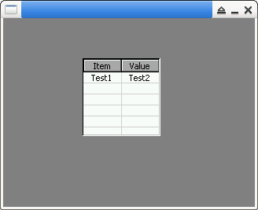

參考資訊：
https://github.com/piyushpandey013/ucGUI
https://github.com/yongzhena/ucgui-linux
main.c
#include "GUI.h"
#include "LISTVIEW.h"
int main(int argc, char *argv[])
{
LISTVIEW_Handle hView = 0;
const GUI_ConstString buf[] = { "Test1", "Test2" };
GUI_Init();
GUI_SetBkColor(GUI_GRAY);
GUI_Clear();
hView = LISTVIEW_Create(100, 50, 100, 100, 0, 100, WM_CF_SHOW, 0);
LISTVIEW_SetGridVis(hView, 1);
LISTVIEW_AddColumn(hView, 48, "Item", GUI_TA_CENTER);
LISTVIEW_AddColumn(hView, 48, "Value", GUI_TA_CENTER);
LISTVIEW_AddRow(hView, buf);
LISTVIEW_Invalidate(hView);
GUI_Delay(1000);
LISTVIEW_Delete(hView);
GUI_Delay(3000);
return 0;
}
編譯、執行
$ gcc main.c -o main libucgui.a -IGUI_X -IGUI/Core -IGUI/Widget -IGUI/WM -lSDL $ ./main
